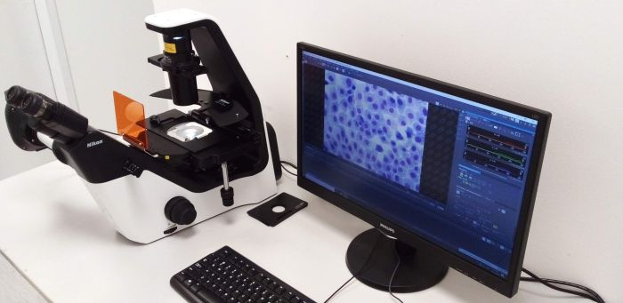

A manual inverted
epifluorescence microscope for simple routine fluorescence or
transmitted light imaging or quick checking of fluorescence expression.
Although simple, it is equipped with a very sensitive camera offering a
really large field of view.

Available
techniques:
- Widefield epifluorescence imaging
- Transmitted light imaging (brightfield, phase contrast, oblique
illumination - Emboss Contrast)
Objectives:
- CFI Plan Fluor 10x/0.3 dry, FWD 15.2 mm, CG 1.2 mm (Phase contrast)
- CFI S Plan Fluor ELWD 20x/0.45 dry, FWD 6.9-8.2 mm, CG 0-2 mm (Phase
contrast)
- CFI Super Plan Fluor ELWD 40x/0.6 dry, FWD 2.8-3.6 mm, CG 0-2 mm
(Phase contrast)
[FWD = free working distance, CG = cover glass]
Fluorescence
filter sets:
- 39000 - AT – DAPI (375/28; 415; 460/50)
- 39002 - AT – FITC (480/30; 505; 535/40)
- 39004 - AT – TRITC (540/25; 565; 605/55)
Fluorescence
excitation sources:
- LED unit - 385 nm, 470 nm and 525 nm
Detectors and
cameras:
- Nikon DS-Qi2 monochrome CMOS camera, 4908x3246 pixels, 7.3 µm/pixel,
usable field (without vignetting) 1608 x 1608 pixels (16.6 mm
diameter)
Software:
Other features:
- Contrast shield (a cover above the stage for fluorescence imaging
under ambient light)
- Emboss Contrast (oblique illumination producing 3D like images,
compatible with plastic dishes)
| Usage fees [SGD/hour] |
NTU |
Academia |
Industry |
| 0 |
30 |
48 |
| Location |
ABIF, SCELSE, B2 (SBS-B2n-27P) |
| Contact |
abif@e.ntu.edu.sg;
nobic.facilities@e.ntu.edu.sg |
BACK TO TOP